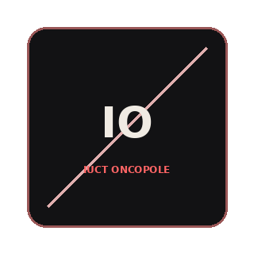
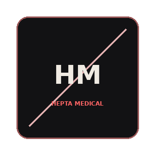
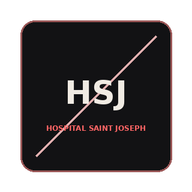
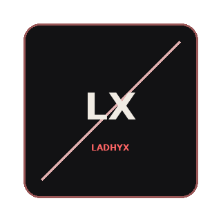
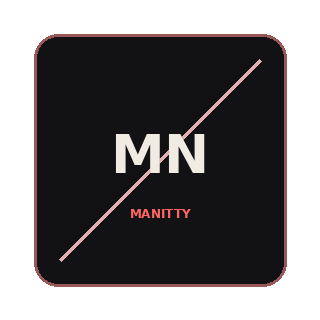
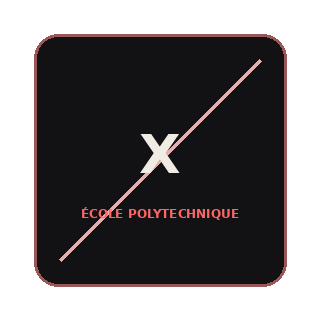

02 — Experience
Each chapter unfolds on command — click to reveal the chronicle
A selected path through hospitals, startups, labs, and engineering teams — not a dense CV table, but the environments that shaped how I work.

Doctoral Researcher
Working across medical imaging validation, simulation, physical phantoms, software tools, and clinical/industrial collaboration.
- Developed PET/CT validation workflows using computational simulation and physical phantoms.
- Built tools for lesion modelling, scanner testing, and reproducible analysis.
- Collaborated with clinical and industrial partners including GE Healthcare.

Researcher & Consultant
Translated technical R&D into product-facing models, clinical visualizations, and clearer startup narratives.
- Built predictive models for a minimally invasive cancer treatment device.
- Automated tools that turned R&D data into clinical and investor-facing visualizations.
- Supported pre-clinical validation and R&D roadmap decisions.

Preclinical Intern
Worked inside a clinical environment, connecting anatomical data, surgical workflows, and patient-specific prototyping.
- Translated anatomical data into 3D-printed patient-specific simulation benches.
- Shadowed interventional cardiologists in live surgical procedures.
- Mapped logistical bottlenecks and unmet clinical needs.

Research Intern
Built experimental and computational tools for soft matter systems with relevance to targeted drug delivery.
- Ran experiments on soft gels and particle suspensions for drug delivery systems.
- Built automated image tracking and analysis pipelines.
- Connected experimental observations with computational interpretation.

Design Project Associate
Combined technical prototyping with market intelligence for a deep-tech startup, from microscopy benches to CEO briefings.
- Mapped electrode technologies and prepared monthly CEO briefings.
- Designed and characterized polymer electrodes using advanced microscopy.
- Evaluated prototypes on scalability, manufacturing, and cost effectiveness.

Project Partner / Associate
Translated clinical imaging datasets into simulation-ready models across biomedical engineering projects.
- Converted clinical 4D MRI datasets into high-fidelity in-silico models.
- Worked on pharmaceutical simulations for targeted drug delivery carriers.
- Built bridges between clinical data, models, and engineering interpretation.
Research Associate
Worked on computational simulation of embolism behavior in vascular flow — the origin point of my research career.
- Ran computational simulations on embolism behaviour in blood flow.
- Mentored student groups within technical clubs.
- Drafted scientific articles and project proposals.
Technical Arsenal maps the actual tools and methods via hover. Field Competencies renders domain depth as a radar profile.